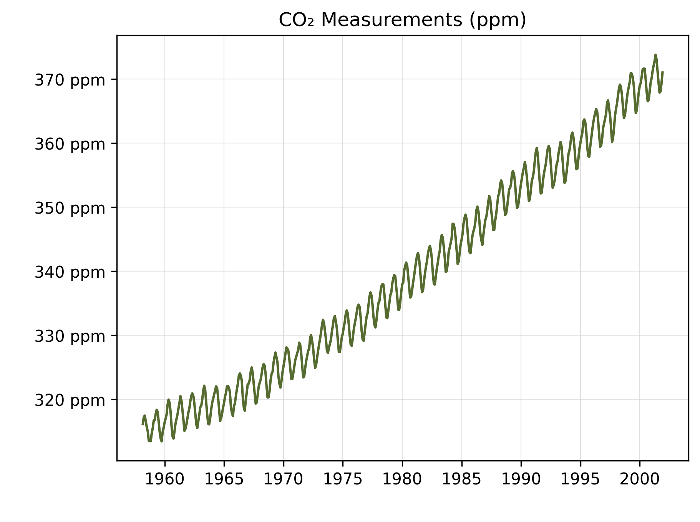
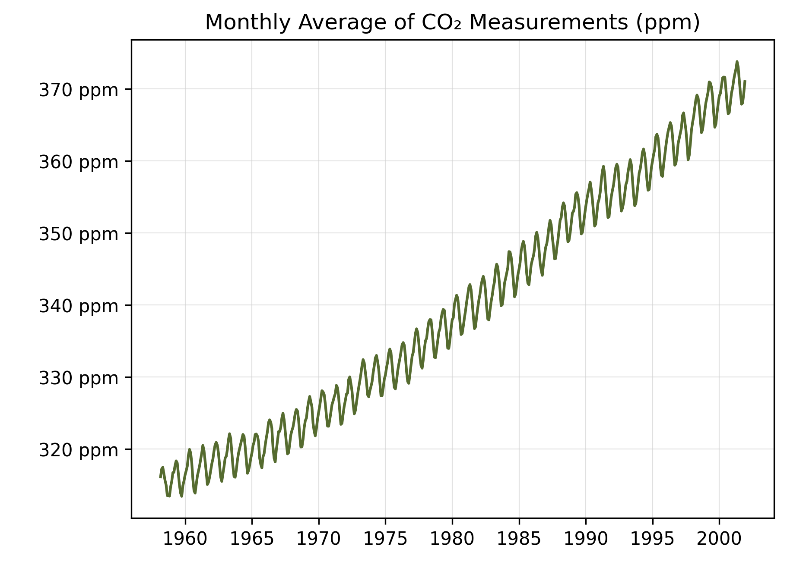
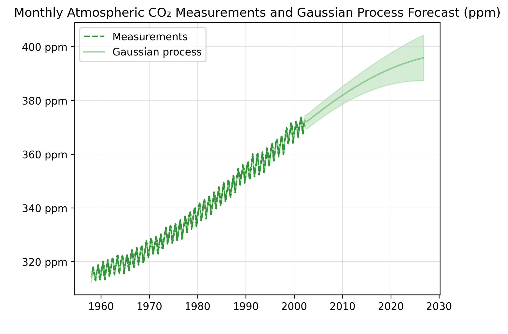

Forecasting of CO2 Levels on Mauna Loa Dataset Using Gaussian Process Regression
Introduction
Atmospheric CO2 is higher currently than at any point in the past 800,000 years (University of Louisiana at Lafayette). A proposed concentration level of CO2 for maintaining a healthy climate is 350 ppm (parts per million), while today's atmospheric level is at 426.57 ppm (NOAA). The goal of this project is to use Gaussian Processes in order to predict CO2 concentration levels in function of the data and also extrapolate data after 2001. Findings such as these are pivotal for research in order to have a clearer understanding of global warming and its effects. Being able to predict future carbon concentration levels can help determine what actions are necessary and their timing in order to offset the ongoing rising temperature on Earth. Rising CO2 levels means the planet experiences rising temperatures, extreme weather, and glacial melt which threaten ecosystems, humans, sea levels, and resources. Using kernel engineering and hyper-parameter optimization by using the gradient ascent on the log-marginal likelihood to model CO2 concentration as a function of time and predict years after 2001 can help assist in offsetting the rising temperatures in the atmosphere. Gradient ascent is the process of maximizing the log marginal likelihood by adjusting the model's hyper parameters. These hyper parameters include the model's amplitude and length scales. The partial derivative is calculated to find the direction in which the hyper parameters should be changed to increase the log marginal likelihood. If the partial derivative is a positive value, the parameter is adjusted in the positive direction. If its negative, then the parameter is adjusted in the negative direction. Repeating this process helps find the hyper parameter values that maximize the log marginal likelihood.

Figure 1. Raw atmospheric CO2 data from the Mauna Loa dataset.

Figure 2. Monthly average atmospheric CO2 data from the Mauna Loa dataset.
Kernel Design
After cleaning and preprocessing, the first step is to divide the data and the target. Since the data is in date format, it will be turned into a numeric number for analysis. The next pivotal step in the project is to design the proper kernel to fit with this data type. In earlier EDA, we saw that there was an upward rising trend in the data. With years increasing, CO2 concentration also increases, but there is a pronounced seasonality with smaller irregularities. Using multiple different kernels will tell the Gaussian process these different characteristics in the data. The first RBF kernel has a large length-scale parameter. This will fit well with the data because the Radial Basis Function will capture the data points' smooth long-term trend. Length-scale controls how quickly a function is able to change. Using a long length-scale will cause slower, smoother change since we are wanting to capture a slow change over a long period of time. The next RBF component is multiplied with a periodic kernel which captures the yearly seasonal pattern. That way the seasonality can gradually change over time, rather than the same pattern repeating the whole time. This creates a locally periodic kernel. The irregularities in the data are captured by using a Rational Quadratic kernel because it can handle irregularities occurring at different length-scales. Another RBF kernel is used to account for correlated noise in the data. For example, the CO2 concentration one day might also be similar to days prior and after. Then a white noise component is used to capture completely random variation in the data, uncorrelated noise.
Gaussian Process Regression
To begin Gaussian regression, the mean is subtracted from the target variable (CO2) to remain consistent with the literature. The Gaussian process is trained on the observed data. Synthetic time points are then made from 1958 to the current month for the model to make predictions on to evaluate how well the model fits the data and for future extrapolation.

Figure 3. Monthly average atmospheric CO2 data & Gaussian Process Forecast.
Sources
Team, GML Web. “Trends in CO2 - NOAA Global Monitoring Laboratory.” GML, gml.noaa.gov/ccgg/trends/monthly.html . Accessed 8 Sept. 2026.
“CO2 Levels Now Higher than Any Time in the Last 23 Million Years.” Ray P. Authement College of Sciences, 6 June 2020, sciences.louisiana.edu/news-events/news/20200606/co2-levels-now-higher-any-time-last-23-million-years .
Roelants, Peter. “Gaussian Process.” GitHub, peterroelants.github.io, github.com/peterroelants/peterroelants.github.io/tree/main/notebooks/gaussian_process .